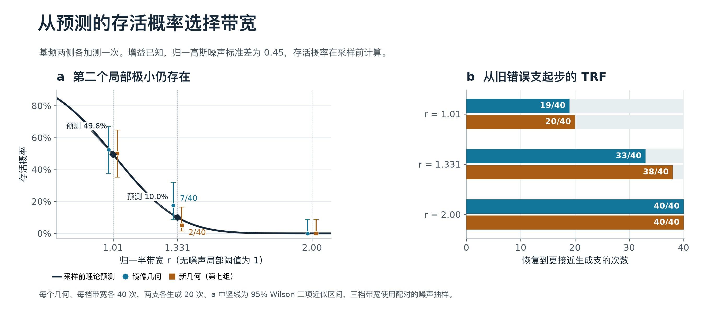
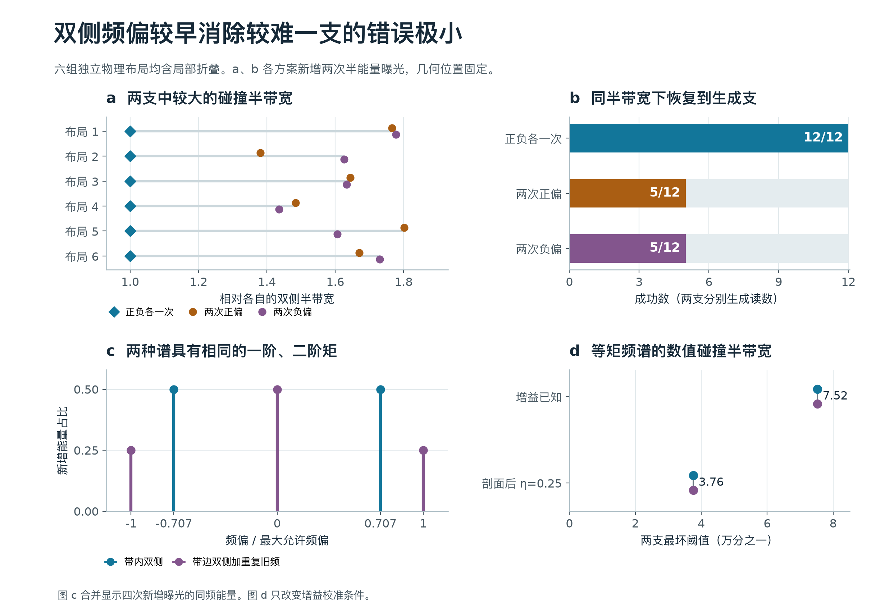
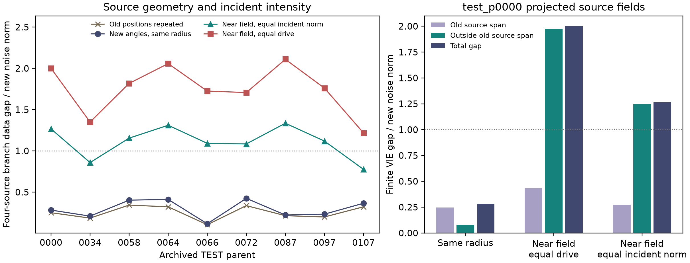
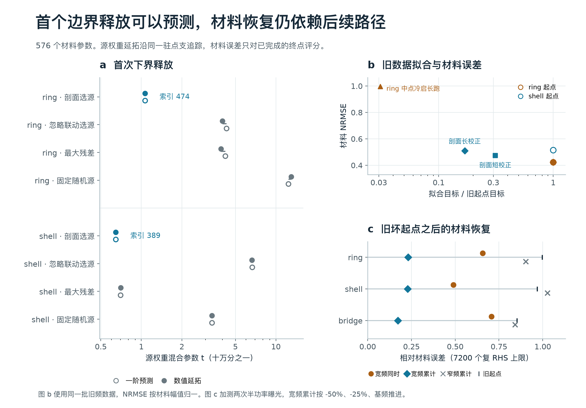

换频率、换照射位置，能解开哪些材料歧义？
已有两份能解释旧读数的材料时，可以在补测之前，用相对噪声和相对带宽估算错误极小仍会留下的概率。两个二维仿真中，带宽刚超过无噪声临界值时，仍有约一半试验能找到旧错误极小。另在 576 维仿真中，把照明移近材料能拉开两份旧解释的读数，普通求解器也能利用这些新数据。
下文分别给出三个量。读数能拉开多少，算法最后走到哪份材料，最后的材料与生成它的真值有多接近。
补测之前，估算错误极小仍会留下的概率
在旧频率下，两份材料给出近乎相同的复回波，损失沿一个材料方向有两个谷。替换照明频率后，一个谷会和隔开两谷的鞍点相遇。验证这件事时，我们沿旧坏谷和鞍点分别追踪，直到曲率降到零，并用全波损失检验两条轨迹。
给定旧分支的局部几何，把噪声除以局部回波尺度，把新增半带宽除以无噪声临界半带宽。对称分配频率、接收增益已知时，这两个相对量给出错误损失谷的局部存活概率。在同一相对噪声下，用镜像例和另外一套六材料布局各做 40 次带噪数值实验。
| 实际半带宽 / 无噪临界半带宽 | 预测存活概率 | 镜像例 | 第七套六材料布局 |
|---|---|---|---|
| 1.01 倍 | 49.6% | 21/40 | 20/40 |
| 1.331 倍 | 10% | 7/40 | 2/40 |
| 2 倍 | 约 0.0027% | 0/40 | 0/40 |
分母是每种带宽的噪声试验数。这里数的是旧错误极小仍然存在的次数。概率需要已知的局部分支几何和相应噪声模型，适用于已跟踪的局部范围。

把两次照射分到高低频，可以更早消除局部错误谷
关键量是频偏的能量加权平均和平方平均。对称频偏抵消一阶平均，同时保留平方平均。这个变化会改变两个谷各自消失所需的带宽。对六套独立生成的物理布局，在各自找到局部折叠及一对旧解之后，让每个旧解轮流生成读数，共 12 次无噪声条件对照。
| 同总能量的新增频率 | 从旧坏起点恢复到生成分支 |
|---|---|
| 高低频各一次 | 12/12 |
| 两次都在正频偏 | 5/12 |
| 两次都在负频偏 | 5/12 |
这 12 次以有一对局部旧解为条件。较早的 R10 自然例中，档案有 10 例提供两份旧解，本轮只在其中 2 例确认了正、负频偏的局部碰撞。
把两份已知材料直接拿新回波比对时，三种频率安排都能选对。上表体现的是同一个求解器从旧错支起步时，会不会被局部错误谷留住。

频谱矩论文图 正负频偏驻点追踪 六套布局逐项结果 自然场景逐例结果
一个二维 TM 镜像例给出明确边界。六个单元只留两个镜像材料未知，用两组相干发射和三个接收位置。对称馈电下，交换左右材料在整段频带的回波一致。给馈电加相对延时后，用完整接收几何预测小分支碰撞阈值，最大误差小于 1%。省略接收空间的额外正交分量，误差可到 41%。在固定频率改变馈电相位也能拉开读数。

旧读数带噪时，自选频率没有比固定宽频更稳
对每套布局的两个生成材料各加三次复噪声，模拟旧、新读数共用一个未知复增益。选频只看带噪旧读数。36 次里，只在 6 次重建出可信的局部折叠并据此缩窄带宽。其余 30 次回到固定 ±2% 的采集配置。
自选对称频率的结果中，普通三起点有 35/36 更靠近生成分支，使用旧根辅助起点有 36/36。固定 ±2% 在这两种求解方式下得到相同的分支计数。把误差从低到高排序，看接近最差十分之一的位置，自选配置的材料 RMSE 分别为 0.1119 和 0.0553，固定配置则为 0.0076 和 0.0056。旧根辅助还需要额外求根。
在 576 维旧坏起点上，按频率累计拟合更有效
环、壳、弯桥使用历史数据和起点。两次新增曝光在相对旧频率 −50% 和 −25% 处，各用一半新增能量。三个频率共用一份无色散材料。两法用同一套宽频回波和 7,200 个 Maxwell 复右端求解上限。一个同时拟合三个频率，另一个从最低频开始，每阶段保留已经加入的读数。
| 使用相同宽频读数 | 环 | 壳 | 弯桥 |
|---|---|---|---|
| 所有频率同时拟合 | 0.657 | 0.490 | 0.707 |
| 由低到高累计拟合 | 0.231 | 0.228 | 0.173 |
表中是材料误差的二范数除以真值材料的二范数，越小越接近真值。冷启动时，累计拟合的环和弯桥是 0.205 和 0.188，壳是 1.219。另在 ±10% 和较低计算预算下，对称频偏也没有在三个对象上同时领先。
宽频累计后，环、壳、弯桥的目标区域重叠率 IoU 从 0.557、0.755、0.532 升到 0.773、0.821、0.809。
把照明移进近场，能看到远处照射漏掉的材料差
用九个 GN–NN R4 历史低对比测试样本。每例都找到两份 576 维材料，完整正演均在旧噪声阈值内，材料间 RMSE 中位为 0.074。对同一份有限材料差，原距离增添新角度与原位重测给出的响应相近，近场照明能看到明显更大的响应。
| 四次新增照明 | 响应差 / 新噪声范数 | 旧源空间外的响应差 / 新噪声范数 |
|---|---|---|
| 原位重测 | 0.251 | 约 0 |
| 同半径新增角度 | 0.283 | 0.077 |
| 近场，等发射能量 | 1.761 | 1.722 |
| 近场，等入射场强 | 1.119 | 1.093 |
近场的最近源点距材料单元边缘 0.0515 个波长。把近场源压到与同方位远场相同的网格平均入射强度，增益仍在。也可直接用角谱看这个差别。两份材料响应差在旧 12 个角度稳定覆盖之外的角阶 |n| ≥ 6，其功率占比中位在外圈为 2.8%，在近圈为 86.2%。

四发近场补测使 5/9 的两份旧候选都退出新旧观测的噪声范围，另 4/9 只保留一份。普通冷启动正则 GN 的材料 RMSE 中位从 0.03159 降到 0.02652。从选中旧分支启动的结果为 0.03584。相同新数据下，原 R4 Voxel 和 J-full 经相同物理校正达到 0.02756、0.03109，均有 9/9 符合联合噪声阈值。
另做一次相干照明。在 24 个发射点、相同辐射功率及馈电系数范数上限为 4 的比较中，近圈响应差是单次噪声范数的 11.80 倍，外圈为 2.95 倍，均为九例中位数。使用这次补测后，旧 GN 起点的平均归一化材料误差在近圈为 0.188，外圈为 0.221。


从旧坏起点跳出去，还要用原观测检验
在 11 个 576 维历史端点上，重新计算原目标的梯度和曲率，区分已经停在局部谷底附近与仍能下降的截停点。环和壳的局部曲率支持盆地解释，弯桥、桥网和多个连续材料的若干方向仍有负曲率。延长迭代可以压低四个截停点的残差，这四个案例的材料结果没有同步变好。
按弱方向的二次近似生成有限跳步，11 个端点都没有得到优于所比较控制的候选。分离块上，普通多起点把材料 NRMSE 从 0.305 降到 0.107。这个正例与频率延拓分开计数。
另用同一批旧读数做干预。先暂时提高某个相干源组合的权重，让贴着材料下界的某个格点可以离开下界，再恢复原权重继续拟合。壳的材料 NRMSE 从 0.515 降到 0.475，IoU 从 0.087 升到 0.340。再延长 500 步，拟合目标继续下降，NRMSE 却回到 0.511，IoU 降到 0.246。
环上也出现拟合和材料质量背离。另一个从材料盒中点出发的长跑，把原目标从 0.009385 降到 0.000291，材料 NRMSE 从旧端点的 0.423 升到 0.996。首个格点离开边界可以预测，恢复的材料仍取决于之后怎么走。

数据、推导和下一轮
论文可以围绕已知局部分支的带宽和风险公式展开。要让这套公式自行决定成像时怎么补测，还须从带噪旧读数可靠地找出分支。实验使用二维标量 TM 体积分方程。吸收、色散、三维偏振和真实仪器失配留待新实验验证。